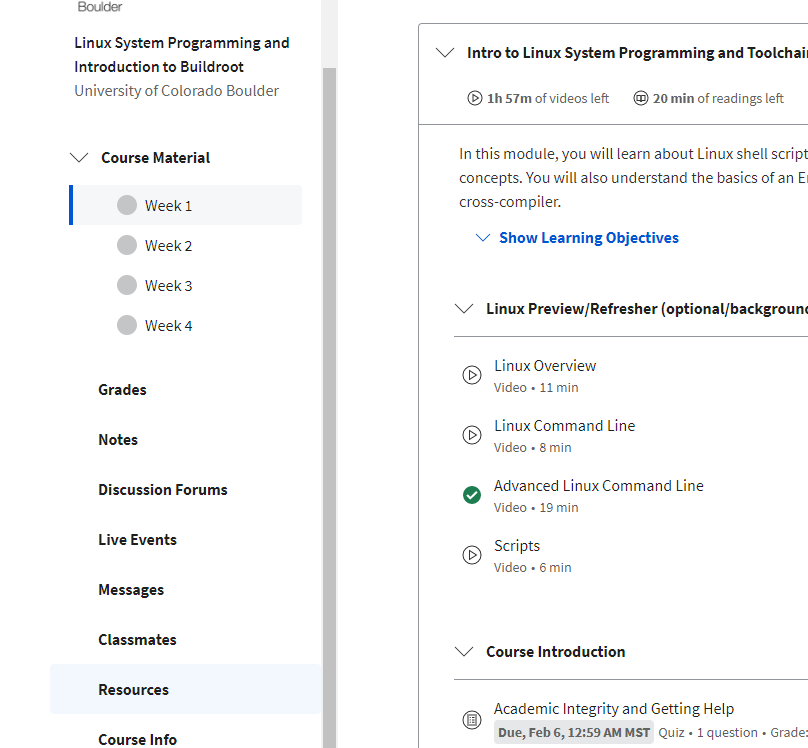
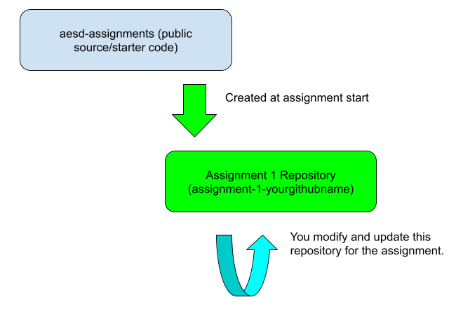

These are detailed instructions for how to complete Assignment 1: Bash Scripting Basics. Please follow the steps for the assignment outlined here, then submit a link to your GitHub repository in the following peer-review assignment. Three peers will evaluate your work based on the rubric included here.
GitHub Repository Links
Please find the link to create your repository for this assignment in the "GitHub Repo Creation Links" section under course resources. You may find course resources on the left side pane of your module view, as highlighted below.

Suggested Reading:
Linux System Programming Chapter 1.
https://ryanstutorials.net/bash-scripting-tutorial/bash-variables.php
https://ryanstutorials.net/bash-scripting-tutorial/bash-if-statements.php
Implementation:
1) Bring up a virtual machine host environment using Virtualbox and the specific version of Ubuntu specified in the instructions here. Please ensure you use only the supported version(s) of Ubuntu. Don't use the most recent version as it may not be tested with the entirety of the course content.
2) Clone the github repository created from the github classroom link and instructions on the resources page. If you haven't cloned a github repository previously, see instructions at this link. The repository will initially be empty. Don’t follow the instructions on the associated GitHub page to add a README commit. Instead fill with template content using the git commands below inside the repository:
git remote add assignments-base https://github.com/cu-ecen-aeld/aesd-assignments.git
This command specifies the base repository at https://github.com/cu-ecen-aeld/aesd-assignments with example starter code
git fetch assignments-base
This command pulls the content locally to match the latest status at https://github.com/cu-ecen-aeld/aesd-assignments
git merge assignments-base/master
This command makes your master branch match the master branch of https://github.com/cu-ecen-aeld/aesd-assignments
git submodule update --init --recursive
This command clones the assignment-autotest submodule and nested git repositories
Setup Your Development Host and Actions Runner:
3) See https://github.com/cu-ecen-aeld/aesd-assignments/wiki/Setting-Up-Your-Development-Host for the instructions to setup your Development Host. See https://github.com/cu-ecen-aeld/aesd-assignments/wiki/Setting-up-Github-Actions to setup your Github Actions Runner. You may use the same machine for your Development Host and Github Actions runner.
Run Unit Tests
4) Run the ./unit-test.sh script. You must run this script from the base aesd-assignments directory. It will fail with a message like this:

This is because the Unity test function in your repository within the student-test folder at Test_validate_username.c is not yet implemented.
5) Update file conf/username.txt to include your github username (no leading/trailing spaces, no additional lines).
6) Implement the Test_validate_username.c function in your assignment repository.
7) Update your username in autotest-validate.c.
8) Re-run the ./unit-test.sh script. The script should now get past the failure message above and the unit tests should now pass. This verifies the Unity unit test function stubs requirements.
9) Write a shell script finder-app/finder.sh as described below:
Accepts the following runtime arguments: the first argument is a path to a directory on the filesystem, referred to below as filesdir; the second argument is a text string which will be searched within these files, referred to below as searchstr
Exits with return value 1 error and print statements if any of the parameters above were not specified
Exits with return value 1 error and print statements if filesdir does not represent a directory on the filesystem
Prints a message "The number of files are X and the number of matching lines are Y" where X is the number of files in the directory and all subdirectories and Y is the number of matching lines found in respective files, where a matching line refers to a line which contains searchstr (and may also contain additional content).
Example invocation:
finder.sh /tmp/aesd/assignment1 linux
10) Write a shell script finder-app/writer.sh as described below
Accepts the following arguments: the first argument is a full path to a file (including filename) on the filesystem, referred to below as writefile; the second argument is a text string which will be written within this file, referred to below as writestr
Exits with value 1 error and print statements if any of the arguments above were not specified
Creates a new file with name and path writefile with content writestr, overwriting any existing file and creating the path if it doesn’t exist. Exits with value 1 and error print statement if the file could not be created.
Example:
writer.sh /tmp/aesd/assignment1/sample.txt ios
Creates file:
/tmp/aesd/assignment1/sample.txt
With content:
ios
11) Run the shell script finder-test.sh provided with your assignment github repository to test your implementations. This script:
Accepts the following arguments: the first argument is the number of files to write numfiles; the second argument is the string to write to each file writestr
Defaults to use numfiles 10 and writestr “AELD_IS_FUN” if respective arguments are not specified.
Creates an empty directory /tmp/aeld-data
Loops to create numfiles files in directory /tmp/aeld-data using the writer.sh script, with writefile first argument name /tmp/aeld-data/usernameX.txt where X is a number from 1 to numfiles, username is the username found in conf/username.txt and writestr is passed as the second argument.
Runs finder.sh script with filesdir set to /tmp/aeld-data and searchstr set to writestr
Compares the output of the finder script with expected output “The number of files are numfiles and the number of matching lines are numfiles”. Prints “success” on match or “error” on mismatch.
12) Test your implementation using the shell script full-test.shand ensure all steps pass.
This runs the same tests performed by Github Actions.
Repository Setup:
